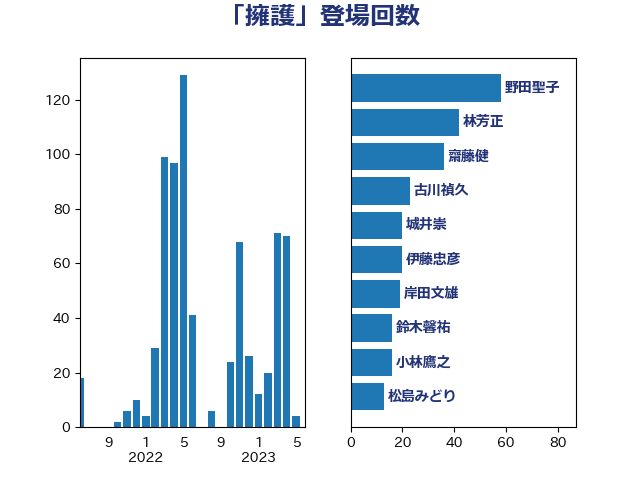

単語「擁護」

| 野田聖子 | 自由民主党 | 58 回 |
| 林芳正 | 自由民主党 | 42 回 |
| 齋藤健 | 自由民主党 | 36 回 |
| 古川禎久 | 自由民主党 | 23 回 |
| 城井崇 | 立憲民主党 | 20 回 |
| 伊藤忠彦 | 自由民主党 | 20 回 |
| 岸田文雄 | 自由民主党 | 19 回 |
| 鈴木馨祐 | 自由民主党 | 16 回 |
| 小林鷹之 | 自由民主党 | 16 回 |
| 松島みどり | 自由民主党 | 13 回 |
| 福島みずほ | 社会民主党 | 12 回 |
| 山口俊一 | 自由民主党 | 12 回 |
| 安江伸夫 | 公明党 | 12 回 |
| 若宮健嗣 | 自由民主党 | 9 回 |
| 本村伸子 | 日本共産党 | 9 回 |
| 後藤茂之 | 自由民主党 | 9 回 |
| 細田博之 | 自由民主党 | 8 回 |
| 鈴木義弘 | 国民民主党 | 7 回 |
| 葉梨康弘 | 自由民主党 | 7 回 |
| 稲田朋美 | 自由民主党 | 7 回 |
| 加藤勝信 | 自由民主党 | 7 回 |
| 石川大我 | 立憲民主党 | 6 回 |
| 新垣邦男 | 立憲民主党 | 6 回 |
| 打越さく良 | 立憲民主党 | 6 回 |
| 門山宏哲 | 自由民主党 | 5 回 |
| 津島淳 | 自由民主党 | 5 回 |
| 小西洋之 | 立憲民主党 | 5 回 |
| 堀場幸子 | 日本維新の会 | 5 回 |
| 前川清成 | 日本維新の会 | 5 回 |
| 高良鉄美 | 無所属 | 4 回 |
| 谷合正明 | 公明党 | 4 回 |
| 湯原俊二 | 立憲民主党 | 4 回 |
| 河野太郎 | 自由民主党 | 4 回 |
| 岡本あき子 | 立憲民主党 | 4 回 |
| 山添拓 | 日本共産党 | 4 回 |
| 山東昭子 | 自由民主党 | 4 回 |
| 小倉將信 | 自由民主党 | 4 回 |
| 塩崎彰久 | 自由民主党 | 4 回 |
| 吉田宣弘 | 公明党 | 4 回 |
| 井上哲士 | 日本共産党 | 4 回 |
| 井上信治 | 自由民主党 | 4 回 |
| 中谷一馬 | 立憲民主党 | 4 回 |
| 高野光二郎 | 自由民主党 | 3 回 |
| 石橋林太郎 | 自由民主党 | 3 回 |
| 田村智子 | 日本共産党 | 3 回 |
| 浜田聡 | NHK党 | 3 回 |
| 浅野哲 | 国民民主党 | 3 回 |
| 櫻井周 | 立憲民主党 | 3 回 |
| 梅村みずほ | 日本維新の会 | 3 回 |
| 杉尾秀哉 | 立憲民主党 | 3 回 |
| 早稲田ゆき | 立憲民主党 | 3 回 |
| 尾辻秀久 | 無所属 | 3 回 |
| 宮本徹 | 日本共産党 | 3 回 |
| 堤かなめ | 立憲民主党 | 3 回 |
| 嘉田由紀子 | 無所属 | 3 回 |
| 佐々木さやか | 公明党 | 3 回 |
| 上田清司 | 国民民主党 | 3 回 |
| 高木毅 | 自由民主党 | 2 回 |
| 野間健 | 立憲民主党 | 2 回 |
| 足立康史 | 日本維新の会 | 2 回 |
| 赤池誠章 | 自由民主党 | 2 回 |
| 萩生田光一 | 自由民主党 | 2 回 |
| 自見はなこ | 自由民主党 | 2 回 |
| 羽田次郎 | 立憲民主党 | 2 回 |
| 田村まみ | 国民民主党 | 2 回 |
| 玄葉光一郎 | 立憲民主党 | 2 回 |
| 沢田良 | 日本維新の会 | 2 回 |
| 森田俊和 | 立憲民主党 | 2 回 |
| 柚木道義 | 立憲民主党 | 2 回 |
| 木原稔 | 自由民主党 | 2 回 |
| 斎藤アレックス | 国民民主党 | 2 回 |
| 平林晃 | 公明党 | 2 回 |
| 川田龍平 | 立憲民主党 | 2 回 |
| 山本香苗 | 公明党 | 2 回 |
| 大西健介 | 立憲民主党 | 2 回 |
| 大串正樹 | 自由民主党 | 2 回 |
| 塩村あやか | 立憲民主党 | 2 回 |
| 吉田統彦 | 立憲民主党 | 2 回 |
| 倉林明子 | 日本共産党 | 2 回 |
| 中司宏 | 日本維新の会 | 2 回 |
| 三宅伸吾 | 自由民主党 | 2 回 |
| 高橋光男 | 公明党 | 1 回 |
| 高木かおり | 日本維新の会 | 1 回 |
| 須藤元気 | 無所属 | 1 回 |
| 音喜多駿 | 日本維新の会 | 1 回 |
| 阿部弘樹 | 日本維新の会 | 1 回 |
| 鈴木敦 | 国民民主党 | 1 回 |
| 鈴木宗男 | 日本維新の会 | 1 回 |
| 里見隆治 | 公明党 | 1 回 |
| 道下大樹 | 立憲民主党 | 1 回 |
| 辻元清美 | 立憲民主党 | 1 回 |
| 赤嶺政賢 | 日本共産党 | 1 回 |
| 藤巻健太 | 日本維新の会 | 1 回 |
| 芳賀道也 | 国民民主党 | 1 回 |
| 義家弘介 | 自由民主党 | 1 回 |
| 緒方林太郎 | 無所属 | 1 回 |
| 紙智子 | 日本共産党 | 1 回 |
| 簗和生 | 自由民主党 | 1 回 |
| 福山哲郎 | 立憲民主党 | 1 回 |
| 矢倉克夫 | 公明党 | 1 回 |
| 田中健 | 国民民主党 | 1 回 |
| 牧山ひろえ | 立憲民主党 | 1 回 |
| 漆間譲司 | 日本維新の会 | 1 回 |
| 清水貴之 | 日本維新の会 | 1 回 |
| 浦野靖人 | 日本維新の会 | 1 回 |
| 池畑浩太朗 | 日本維新の会 | 1 回 |
| 池下卓 | 日本維新の会 | 1 回 |
| 永岡桂子 | 自由民主党 | 1 回 |
| 櫛渕万里 | れいわ新選組 | 1 回 |
| 橋本岳 | 自由民主党 | 1 回 |
| 根本匠 | 自由民主党 | 1 回 |
| 松沢成文 | 日本維新の会 | 1 回 |
| 松本剛明 | 自由民主党 | 1 回 |
| 末松信介 | 自由民主党 | 1 回 |
| 掘井健智 | 日本維新の会 | 1 回 |
| 広瀬めぐみ | 自由民主党 | 1 回 |
| 山田勝彦 | 立憲民主党 | 1 回 |
| 山岸一生 | 立憲民主党 | 1 回 |
| 宮路拓馬 | 自由民主党 | 1 回 |
| 宮崎政久 | 自由民主党 | 1 回 |
| 守島正 | 日本維新の会 | 1 回 |
| 天畠大輔 | れいわ新選組 | 1 回 |
| 大野敬太郎 | 自由民主党 | 1 回 |
| 大岡敏孝 | 自由民主党 | 1 回 |
| 大口善徳 | 公明党 | 1 回 |
| 大串博志 | 立憲民主党 | 1 回 |
| 塩川鉄也 | 日本共産党 | 1 回 |
| 國重徹 | 公明党 | 1 回 |
| 吉田はるみ | 立憲民主党 | 1 回 |
| 古賀友一郎 | 自由民主党 | 1 回 |
| 勝目康 | 自由民主党 | 1 回 |
| 伊藤渉 | 公明党 | 1 回 |
| 伊藤岳 | 日本共産党 | 1 回 |
| 仁比聡平 | 日本共産党 | 1 回 |